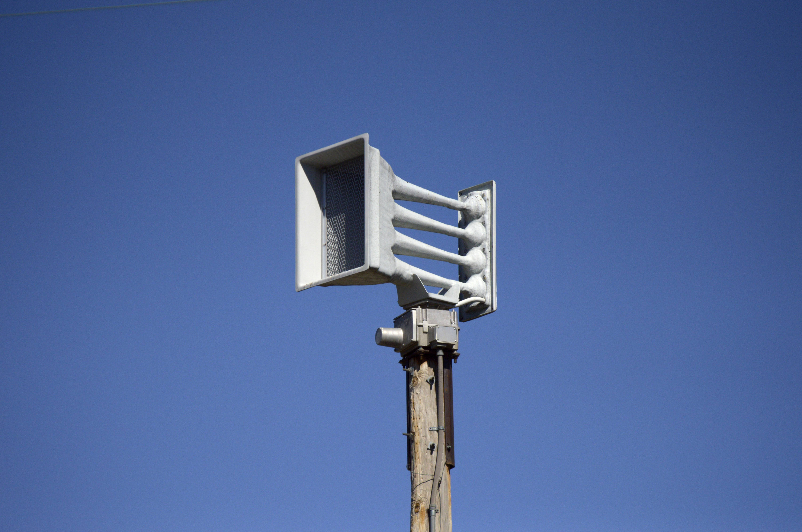

Whelen WPS-4004

This Whelen WPS-4004 is located at McClure Park.
GPS coordinates: 36.15028, -95.894456
This siren runs on a Digital ESC-2030, and peaks at 560 Hertz.
Siren Test Audio (10/16/2024):
Your browser does not support the audio element.